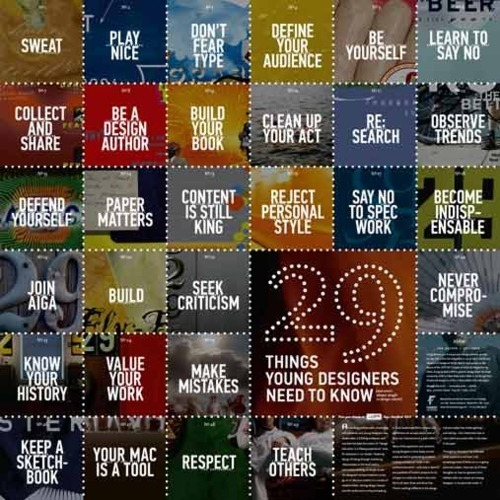

Mon, 14 Mar 2011 09:53:00 · designers · design
29 things that all young designers need to know

29 Things That All Young Designers Need to Know - http://t.co/jM8Lvjc
Mon, 14 Mar 2011 09:53:00 · designers · design

29 Things That All Young Designers Need to Know - http://t.co/jM8Lvjc